ДОСЛІДНИЦЬКИЙ КУРС · КМАН
Матеріали та адитивні технології
Досліджуйте структуру й властивості матеріалів, моделюйте процеси, обирайте технології 3D-друку та створюйте власний науковий проєкт.
Почати дослідження Моє дослідження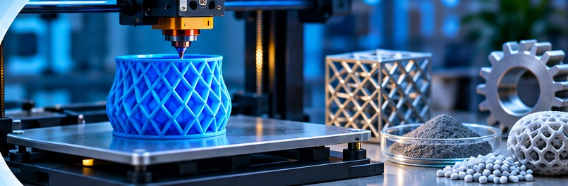
Розділи курсу
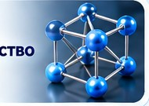
01
Матеріалознавство як наука
2 теми · відкрити розділ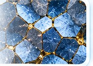
02
Структура матеріалів
2 теми · відкрити розділ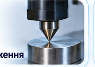
03
Поверхні та взаємодії
2 теми · відкрити розділ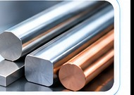
04
Змочування та адгезія
2 теми · відкрити розділ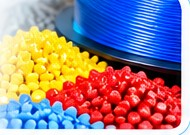
05
Кристалізація металів
2 теми · відкрити розділ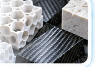
06
Сучасні матеріали
2 теми · відкрити розділ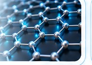
07
Матеріали для 3D-друку
2 теми · відкрити розділ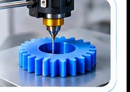
08
Методи адитивного виробництва
2 теми · відкрити розділ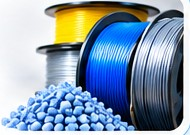
09
Порошки для виробництва
2 теми · відкрити розділ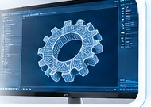
10
Проєктування виробу
2 теми · відкрити розділ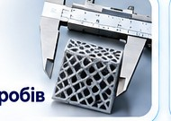
11
Якість і випробування
2 теми · відкрити розділ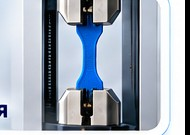
12
Інженерне дослідження
2 теми · відкрити розділ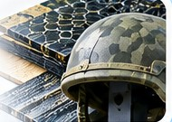
13
Наукові джерела та доброчесність
2 теми · відкрити розділ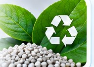
14
Обробка результатів
2 теми · відкрити розділ15
Власний дослідницький проєкт
2 теми · відкрити розділ16
Презентація та захист
2 теми · відкрити розділВід знань — до власного відкриття
Працюйте з короткою теорією, інтерактивними завданнями, навчальними симуляторами й накопичуйте результати у звіті. Моделі спрощені та не замінюють лабораторних випробувань.
Офіційний сайт КМАН